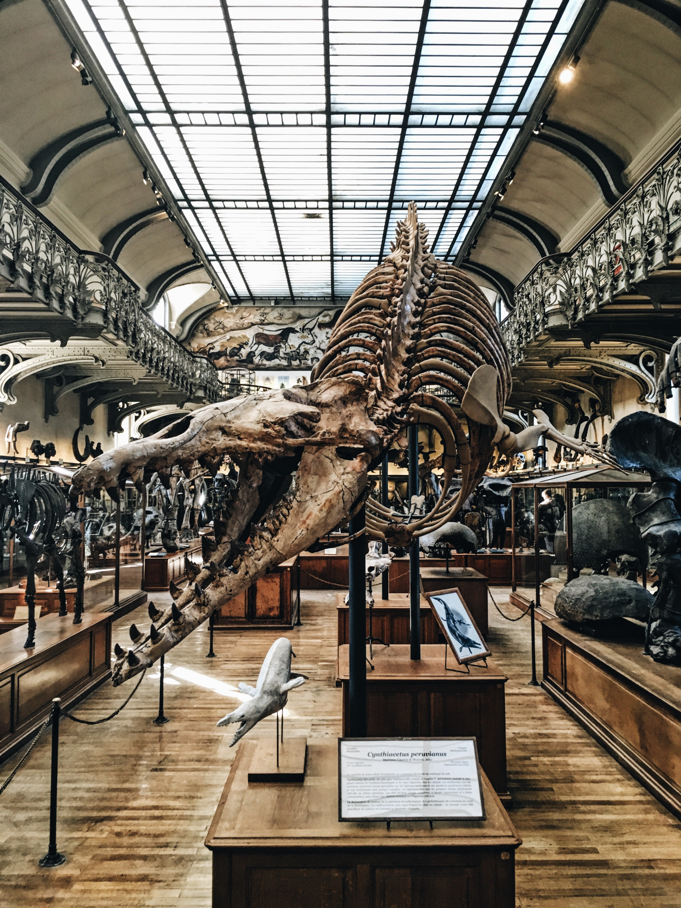
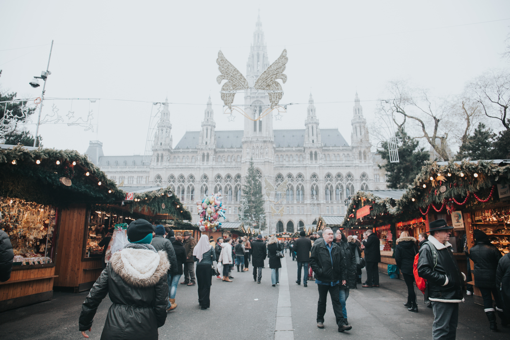

Las calles de esta ciudad en sí ya son un verdadero espectáculo, pero aquí os dejo una serie de recomendaciones, sobre los sitios, tanto de comida, calles, museos, que merecen mucho la pena ir.
Cafeterías

Oberlaa Café
Cafetería situada en una de las calles comerciales de Viena. No solo el interior de esta es bonito, sino que la variedad de tartas que tienen son una locura lo buenas que estan! sin duda alguna no os podeir ir de allí sin probar la lemon pie, una de mis favoritas. Igual que la mayoría de las cafeterías de esta ciudad, tiene precios de todo tipo.
Café Central
Es una de las cafeterías más famosas de la ciudad de Viena. Se encuentra en el distrito 1 de la capital austriaca, en el numero 14 de la calle Herrengasse. Su carateristico edificio renacentista recibe el nombre de Palais Festel en honor a su arquitecto, Heinrich von Festel, además de ser uno de los sitios con referentes literarios. Los precios son un tanto elevados, a corde con la ciudad, pero realmente merece la pena ir, no solo por lo bonito que es el interior, sino también por la comida que tienen. Yo recomiendo ir pronto, ya que hay que hacer cola para entrar, al no ser qu tengas reserva. Pero sin duda alguna, merece muchisimo la pena la espera.
Cafetería del Hoterl Sacher
Sin duda alguna, uno de los sitios más emblemáticos de esta ciudad, y está claro que no puedes irte de alli sin probar su tarta más significativa, la Tarta Sacher, realizada con chocolate y mermelada de albaricoque y recubierta con chocolate. Comparada con el resto, es bastante caro, pero cien por cien que merece la pena esperar la eterna cola, para probarla.
Cafe Mozart
Situado en frente de la Albertina, un sitio muy vintage, que sin duda alguna te translada a la Viena de los Habsburgo. Su nombre vienen dado por el músico más emblemático y famoso conocido a nivel mundial, Mozart. En cuanto al precio, es razonable, dentro de la zona en la que está y en cuanto a la calidad de comida, bastante bien.
Museos
Museo Imperial de Historia Natural
Sin duda alguna de mis museos favoritos de este tipo, de todos los que he visitado. No solo es alucinante su edificio, por su estilo, decoración y pinturas situadas en el techo de entrada, sino también la cantidad de especies y colecciones que este museo contiene! Mi parte favorita, podría decir cualquiera, todo es muy real pero sin duda alguna, los dinosaurios.
Museo de Historia del Arte
El edificio gemelo del Museo Imperial de Historia Natural. Me quedé con muchas ganas de visitarlo ya que adoro todo lo relacionado con el arte y su historia. Tine cientos de colecciones en su interior repartidas entre sus tres plantas, pero es que además, el edificio en sí, ya es una obra de arte. Sin duda alguna, cuando vuelva lo visitaré encantada.
Cripta Imperial de Viena
Si eres un apasionado de la historia y las tumbas de reyes, este es tu museo. Es nada más y nada menos que el principal lugar de sepultura para los Habsburgo, para los emperadores del Sacro Imperio Romano Germánico de la casa de Habsburgo y sus descendientes. Este museo o cripta, es comunmente conocido como la Iglesia de los Capuchinos, situada en situada en la plaza del Neuen Markt, cerca del Palacio Imperial de Hofburg. La cripta contiene 142 cuerpos de miembros de la realeza y la aristocracia más algunas urnas que contienen los corazones o los restos incinerados de otros cuatro. Entre ellos se cuentan 12 emperadores y 18 emperatrices. La sepultura más reciente es de 2011.
Además de, visitar los distintos museos situados en los distintos munumentos principales de la ciudad.
Mercadillos Navideños (Diciembre)
Si visitas la ciudad de Viena durante el mes de diciembre, encontrarás toda la ciudad ambientada con luces, pero además un montón de mercadillos navideños, por toda la ciudad
Mercado de Navidad tradicional de Christkindlmarkt
En la plaza "Rathausplatz" se instala el Mercado "Christkindlmarkt" , convirtiéndola en un auténtico lugar mágico de Adviento.
Art Advent Christmas Market
El pequeño y acogedor Mercado de Navidad de Karlsplatz está situado en un escenario bonito enfrente de la iglesia de San Carlos. Es un lugar ideal para ir con niños donde hay diversas actividades dedicadas a ellos. Todos los productos gastronómicos que se ofrecen son biológicos.
Mercados en el Palacio de Schönbrunn
Nada más imperial que este mercadillo navideño situado en el patio del Palacio de Schönbrunn, patrimonio de la Humanidad. Cuando el año llegua a su fin, este mercado - casi imperceptiblemente - se convierte en un Mercado de Año Nuevo. Los puestos serán decorados de manera distinta, donde los visitantes podrán adquirir no sólo los tradicionales objetos de arte artesanal, sino también alguna que otra especialidad particular del cambio del año.
Mercado navideño en Maria-Theresien-Platz
El mercado "Weihnachtsdorf Maria-Theresien-Platz" se encuentra situado entre los museos de historia del arte y de historia natural. Durante el Adviento alrededor de 60 puestos se levantan aquí ofreciendo artesanía tradicional e ideas originales para regalar.
Mercado de Navidad "Altwiener Christkindlmarkt"
El antiguo mercado de Navidad "Altwiener Christkindlmarkt" situado en la plaza Freyung, en el casco antiguo de la ciudad, está comprometido con la tradición.